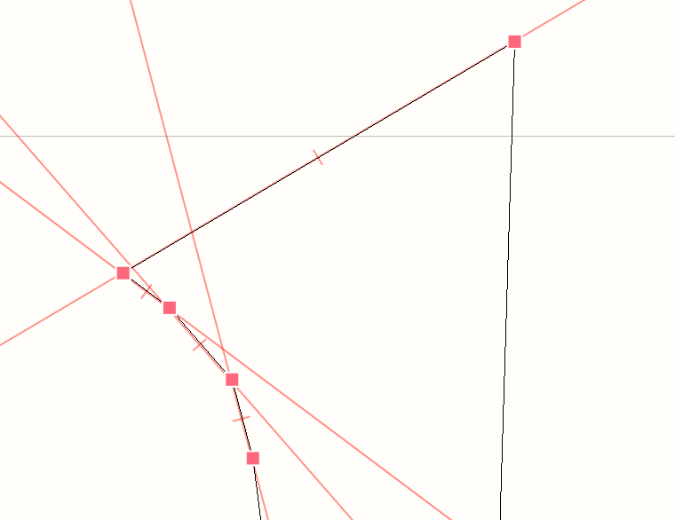
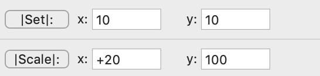

Extensions or digital tools are important part of my workflow. I tend to observe pattern or tiring task in my workflow which I then automatize.
Scale, Absolutely!
https://github.com/jansindl3r/Scale-absolutely
is an extension for RoboFont that allows setting dimensions of selected object in points.
Extreeeme45
https://github.com/jansindl3r/Extreeeme45
adds point at extrema point under 45 degrees on selected curves or the whole glyph. It was created out of the need for taking full advantage of the infamous diagonal stem in "S" and related problems. 
Add Segment Guideline
https://github.com/jansindl3r/Add-segment-guideline
is another extension for RoboFont that gives it possibility to add guidelines directly between two points. While working on a project I got terribly tired of adding guidline because every time I added one I had to check angle of neighbouring stem and copy the value into the guideline. 
sameWidther
https://github.com/jansindl3r/sameWidther
same widther is a commandline tool for getting words of same visual width. It can be downloaded from GitHub or via pip. With pip install sameWidther.